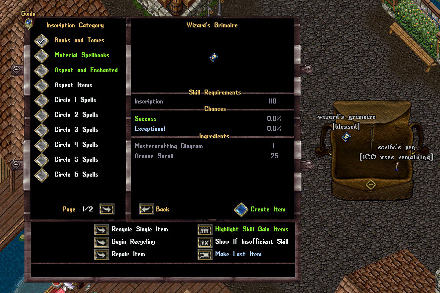
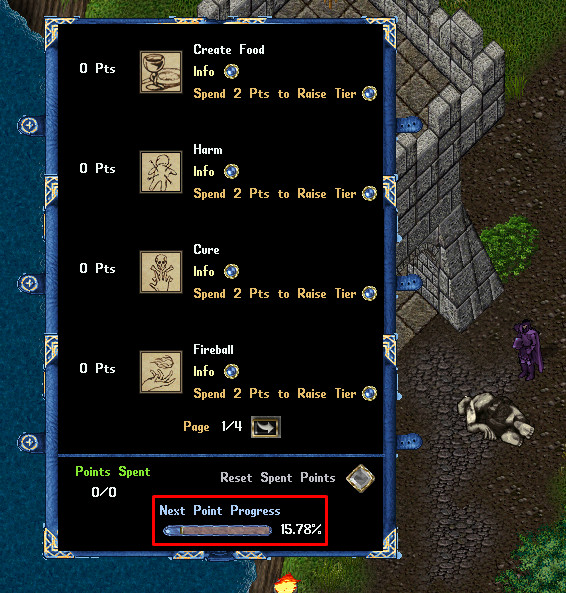
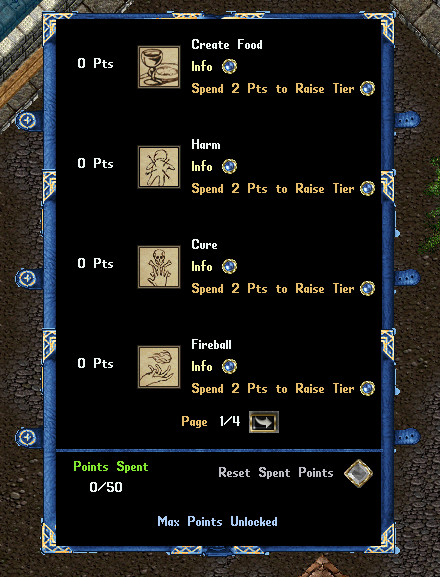
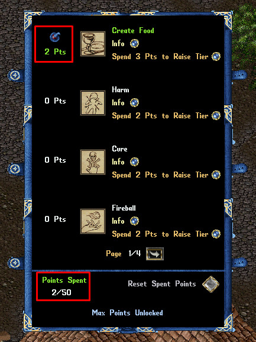
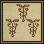
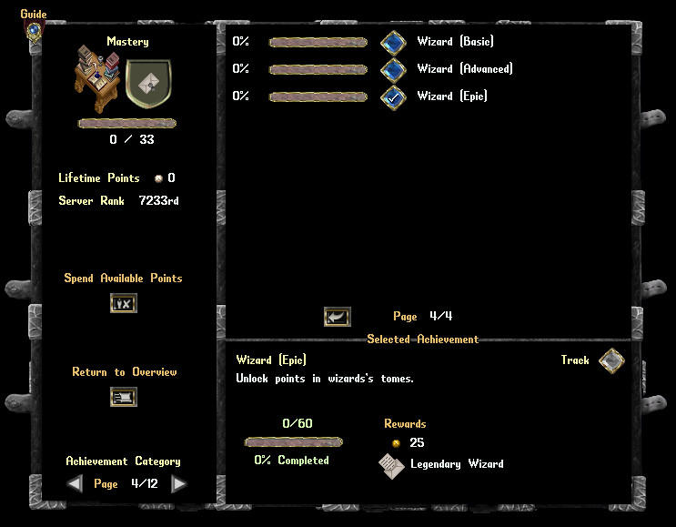

法师宝典（Wizard's Grimoire）是玩家用抄写（Inscription）技能、在「书籍与魔典（Books and Tomes）」分类下制作的祝福（Blessed） PvM 物品。它和召唤师魔典（Summoner's Tomes）、近战宝典（Dexer Codexes）属同一路数：双击打开，进入为该角色保存的法师档案（Wizardry Profile）。档案永久绑定角色、不会丢失——宝典弄丢了，重新弄一本即可，进度一点不损。
硬门槛：要吃到法师宝典的任何收益，必须至少 80 魔法（Magery），并且至少 80 冥想（Meditation）或 80 魔法评估（Evaluating Intelligence）。技能不达标，宝典不开张。

官方演示视频：YouTube · 法师宝典介绍（需能访问 YouTube）



现行版本中，所有法师法术升级到下一档的点数成本完全一致：
| 目标档位 Target Tier | 累计花费 Cumulative Cost |
|---|---|
| 升到 I 档 Tier 1 | 1 点 |
| 升到 II 档 Tier 2 | 3 点 |
| 升到 III 档 Tier 3 | 5 点 |
累计制：从 I 档继续升 II 档，只需再补 2 点（1 → 3）；升满 III 档总共 5 点。40 点上限意味着无法把法术全部点满，必须取舍。
关于数量：官方正文写「16 种法术」，但现行升级表实际列出 25 项，其中 4 项为合并条目（解毒／大解毒、保护／大保护、诅咒／群体诅咒、吸魔／噬魔），合计覆盖 29 个法术。此处照官方表格完整呈现。括号内数值依次为 I / II / III 档。
| 法术 Spell | 档位加成 Bonus（I / II / III） |
|---|---|
造食术 Create Food |
造出一朵魔法蘑菇，恢复 5 / 15 / 25 点法力；两次使用之间冷却 60 秒（恢复量随魔法技能缩放）。 |
魔法箭 Magic Arrow |
每 15 秒内首次施放此法术时，伤害提高 50% / 150% / 250%。 |
反应护甲 Reactive Armor |
受到生物伤害时，有 18% / 54% / 90% 几率不扣减该法术剩余的总减伤额度。 |
伤害术 Harm |
每 15 秒内首次施放此法术时，伤害提高 50% / 150% / 250%。 |
解毒术 / 大解毒术 Cure / Arch Cure |
解毒几率提高，幅度为正常值的 10% / 30% / 50%。 |
保护术 / 大保护术 Protection / Arch Protection |
施法者及其随从对生物获得额外 5 / 15 / 25 点有效护甲（Effective Armor Rating）。 |
火球术 Fireball |
每 15 秒内首次施放时，在 15 秒内对目标额外造成最终法术伤害的 50% / 150% / 250%。 |
祝福术 Bless |
同时为目标 6 格内最多 2 / 6 / 10 个其他友方目标施加祝福术（优先玩家控制的生物）。 |
毒术 Poison |
施法者有效制毒技能提高 7 / 21 / 35。但仍须满足各毒种的印刷门槛，才能施放对应等级的毒。 |
闪电术 Lightning |
每 15 秒内首次施放时，伤害提高 40% / 120% / 200%，并定身（Hinder）目标 0.5 / 1.5 / 2.5 秒。 |
 强效治疗 Greater Heal |
在 15 秒内，额外治疗目标治疗量的 8% / 24% / 40%。 |
诅咒术 / 群体诅咒 Curse / Mass Curse |
接下来 60 秒内，施法者对该目标施放的法术伤害提高 6% / 18% / 30%。 |
吸魔 / 噬魔 Mana Drain / Mana Vampire |
施法者对该目标施放敌对法术时，法力返还几率提高 6% / 18% / 30%。吸魔（Mana Drain）持续 1 分钟，噬魔（Mana Vampire）持续 5 分钟。 |
火墙 Fire Field |
移动型力场（声波相位 Agorawave Aspect）伤害提高 8% / 24% / 40%。 |
心灵爆震 Mind Blast |
伤害提高 7% / 21% / 35%，并有 3% / 9% / 15% 几率定身目标 3 秒；若目标有效护甲 ≥ 75，该几率再提高 100%。 |
魔法反射 Magic Reflect |
当魔法反射被移除时，施法者获得对生物法术 6% / 18% / 30% 的伤害抗性，持续 60 秒。 |
毒墙 Poison Field |
施法者有效制毒技能提高 7 / 21 / 35。但仍须满足各毒种的印刷门槛。 |
能量弹 Energy Bolt |
伤害提高 6% / 18% / 30%；若目标在接下来 5 秒内被击杀，玩家恢复 3 / 9 / 15 点法力。 |
爆炸术 Explosion |
施法距离增加 1 / 2 / 3 格，伤害提高 5% / 15% / 25%。 |
麻痹墙 Paralyze Field |
移动型力场伤害提高 6% / 18% / 30%，麻痹持续时间延长 5 / 15 / 25 秒。 |
烈焰打击 Flamestrike |
在 15 秒内对目标额外造成最终法术伤害的 7% / 21% / 35%。 |
流星雨 Meteor Swarm |
伤害提高 8% / 24% / 40%。 |
连锁闪电 Chain Lightning |
伤害提高 7% / 21% / 35%，每个被命中的目标各有 5% / 15% / 25% 几率被定身 3 秒。 |
地震术 Earthquake |
伤害提高 7% / 21% / 35%；施法者对每个被命中目标额外获得 2% / 6% / 10% 法术伤害加成，持续 30 秒（不叠加）。 |
复活术 Resurrection |
法力返还几率提高 10% / 30% / 50%，并有 20% / 60% / 100% 几率额外复活目标 4 格内一名友方目标（优先玩家控制的生物）。 |
